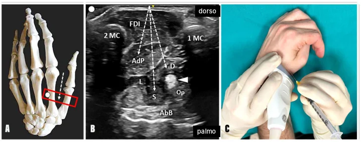

La tossina botulinica è un farmaco che, iniettato in un muscolo, ne riduce in modo temporaneo la capacità di contrarsi. Agisce sul punto in cui il nervo comanda il muscolo e blocca il segnale per alcuni mesi.
In riabilitazione serve soprattutto contro la rigidità muscolare che segue una lesione del sistema nervoso. L'effetto è reversibile, e da solo non basta: apre una finestra che va usata.

A che cosa serve
Spasticità
È l'impiego principale in medicina riabilitativa. Dopo un ictus, un trauma cranico, una lesione del midollo o nella sclerosi multipla, alcuni muscoli restano contratti in modo involontario: la mano si chiude, il gomito non si distende, il piede si gira verso l'interno. La tossina, iniettata nei muscoli giusti, riduce quella contrazione.
L'obiettivo non è sempre «muovere di più». Spesso è poter aprire la mano per lavarla, infilare una manica, appoggiare bene il piede, togliere un dolore. Questi obiettivi vanno concordati prima, perché determinano quali muscoli trattare e con quale dose.[4]
Distonia cervicale
Nella contrazione involontaria dei muscoli del collo che ruota o inclina la testa, la tossina è il trattamento di riferimento.[4]
Dolore cronico
Nel dolore muscolo-scheletrico cronico i risultati sono contrastanti, e la tossina va considerata un'aggiunta dentro un programma, mai un trattamento isolato.[1] Nel mal di schiena cronico senza una causa precisa il beneficio riguarda una parte dei pazienti,[2] e nel dolore di spalla di origine neurologica l'iniezione sotto guida ecografica ha ridotto il dolore.[3] Sono impieghi che vanno discussi caso per caso, e in diverse situazioni si tratta di un uso al di fuori dell'indicazione registrata.
Com'è la seduta
Il medico individua i muscoli da trattare e, per raggiungerli con precisione, usa l'ecografo o l'elettrostimolazione: molti muscoli bersaglio sono profondi e vicini ad altri che non vanno toccati.[4]
Le punture sono poche e rapide, con aghi sottili. La seduta dura in genere meno di mezz'ora, non richiede anestesia e si torna a casa subito. Nei bambini e in chi non tollera le punture si possono usare creme anestetiche o altre misure concordate prima.
I tempi sono il dato più importante da conoscere:
- l'effetto comincia dopo alcuni giorni, non subito;
- raggiunge il massimo attorno a un mese;
- dura circa tre o quattro mesi, poi si esaurisce gradualmente;
- le sedute si ripetono a distanza di alcuni mesi, mai a poche settimane l'una dall'altra.
Dopo l'iniezione, fai
- Riprendi o intensifica la riabilitazione: è nelle settimane di effetto che si guadagna qualcosa di stabile.
- Usa i tutori o le stecche se ti sono stati prescritti.
- Annota che cosa è cambiato rispetto all'obiettivo concordato: serve a decidere le dosi della volta successiva.
- Segnala subito difficoltà a deglutire, a respirare, debolezza diffusa o visione doppia.
Non fare
- Non giudicare il risultato nei primi giorni: il farmaco non ha ancora agito.
- Non chiedere di anticipare la seduta successiva perché l'effetto sta calando.
- Non aspettarti che la tossina da sola restituisca un movimento: riduce la resistenza, non insegna il gesto.
Che cosa può e che cosa non può fare
La tossina agisce sulla contrazione involontaria del muscolo. Non agisce su una retrazione ormai fissata: quando il muscolo e i tessuti attorno si sono accorciati in modo stabile, l'articolazione resta rigida anche con il muscolo rilassato. È la ragione per cui il momento in cui si interviene conta, e per cui il trattamento si accompagna a stecche, posture ed esercizio.[4]
Non cura inoltre la malattia che ha causato la spasticità: ne riduce una conseguenza.
Quando non si fa
- Malattie della giunzione fra nervo e muscolo, come la miastenia.
- Infezione in corso nel punto da iniettare.
- Allergia nota al prodotto.
- Gravidanza e allattamento: i dati disponibili sono limitati e la decisione va presa valutando i rischi.
Richiedono attenzione particolare la terapia con alcuni antibiotici che interferiscono con la trasmissione nervosa, e le condizioni che riducono già la forza o la capacità di deglutire.
Effetti indesiderati
I più comuni sono locali e passeggeri: dolore nel punto di iniezione, piccoli lividi, gonfiore, e nei giorni successivi una sensazione simile a quella dell'influenza.[5]
L'effetto indesiderato specifico di questo farmaco è una debolezza eccessiva del muscolo trattato, o di un muscolo vicino raggiunto dal farmaco. A seconda della sede può significare una palpebra che cala, difficoltà a sollevare un braccio, una presa più debole. Si risolve da sola con l'esaurirsi dell'effetto.
Esiste infine un'avvertenza presente nella scheda tecnica di tutti i prodotti: in rari casi l'effetto può diffondersi oltre la sede di iniezione e provocare debolezza generalizzata, visione doppia, difficoltà a deglutire o a respirare, alterazioni della voce. Può comparire da poche ore a diverse settimane dopo il trattamento ed è una situazione da valutare con urgenza.[5] È rara, ma va conosciuta prima, non dopo.
Cosa è utile sapere prima
Le unità dei diversi prodotti non sono intercambiabili. In commercio esistono più preparati e la stessa cifra di «unità» significa quantità diverse: una dose non si converte da un prodotto all'altro.[4] È il motivo per cui conviene sapere quale prodotto ti è stato iniettato e in che dose.
Il risultato dipende da quali muscoli vengono scelti. A parità di farmaco, la differenza la fanno la valutazione clinica e la precisione con cui si raggiunge il bersaglio.[4]
Serve un obiettivo scritto. Prima del trattamento vanno definiti che cosa ci si aspetta e come lo si misurerà. Senza quello, al controllo successivo è impossibile dire se è servito.
Da dove vengono queste informazioni
- Battista S, Buzzatti L, Gandolfi M, et al. The use of botulinum toxin A as an adjunctive therapy in the management of chronic musculoskeletal pain: a systematic review with meta-analysis. Toxins 2021;13(9):640. doi:10.3390/toxins13090640
- G BK, Jain M, Meher BR. Efficacy of botulinum toxin type A for treating chronic low back pain: a systematic review and meta-analysis. European Journal of Clinical Pharmacology 2026;82(6):143. doi:10.1007/s00228-026-04073-z
- Zhuang S, Zhang X, Lin C, et al. Ultrasound-guided botulinum toxin type A for shoulder pain: a meta-analysis of randomized controlled trials. BMC Musculoskeletal Disorders 2026;27(1):14. doi:10.1186/s12891-025-09347-8
- Hernández Franco J, Santamaría Molina SJ, Zorrilla Sánchez JJ, et al. Botulinum toxin type A in spasticity and cervical dystonia: practical clinical recommendations. Toxins 2026;18(7):287. doi:10.3390/toxins18070287
- Padda IS, Tadi P. Botulinum toxin. StatPearls, StatPearls Publishing, aggiornato 2023. Fonte terziaria, usata qui per il profilo di sicurezza e l'avvertenza sulla diffusione a distanza riportata nelle schede tecniche.
Scheda aggiornata il 16 novembre 2026. Prossima revisione prevista entro novembre 2028.
Per quali disturbi
Le schede dei disturbi per cui questo trattamento viene preso in considerazione, con quello che dicono le linee guida.
Cerca un'altra scheda
Un disturbo, un trattamento, o anche solo il punto che fa male: «formicolio», «tallone», «spalla congelata».